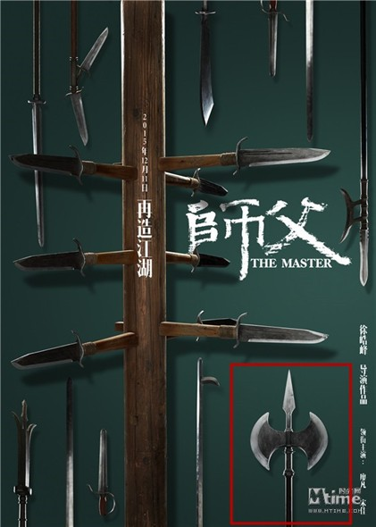
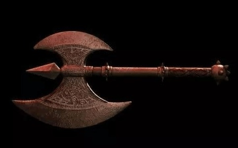

八： 斧钺
《师父》中巷战兵器之一。兵器谱上，斧、钺是近亲，它们产生于同一年代，也在商朝时就同期列装部队。钺的形式与斧相同，但比斧面要大三分之一，前端有长约六寸的短矛，使得钺的使用方法是斧、枪、矛的三合一特性。

电影中出现的斧钺，在春秋战国时期实战中的地位已大大降低，多用于仪仗、装饰，但在三国时期受到兵家重视，诸葛亮就写过一篇《作斧教》强调斧钺的重要性。同样也渗透至民间成了武林人士的演武兵器。

大者为钺，小者为斧。钺在实战中运用的时刻不长，估量许多兄弟都不知道，它在夏商西周是战车上的具有无穷震慑的重武器，也是皇帝的武器，后来因为过分粗笨变被筛选了，从尔后钺只能作为礼仪武器。而斧的开展就比大头的钺走运得多，中国历代都有人运用斧，不论是大唐开国元勋程咬金用的宣花车轮大斧，仍是绿林中梁山豪杰李逵用的板斧，能够立刻的大斧，也可为双手拿的板斧，品种许多。斧的杀伤很强，归于重武器，以劈砍为主。